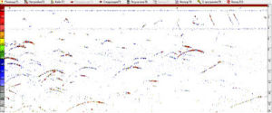
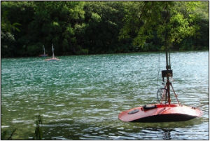
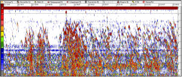

Количественная оценка гидробионтов на водотоках.
В 2006 – 2016 гг комплекс “NetCor” использовался в научных исследованиях на реках РФ:
- Река Иртыш, объект – осетровые и туводные рыбы;
- Река Шуя (Карелия), объект – лососевые рыбы;
- Река Поной (Кольский п-ов), объект – лососевые рыбы;
- Река Озерная (Камчатка), объект – озерновская нерка;
- Река Северная Двина, объект – сиговые и лососевые рыбы;
- Река Онега, объект – лососевые рыбы;
Из полученных результатов применения гидроакустического комплекса “NetCor” для оценки числа прошедших рыб на различных реках можно заключить:
- “NetCor” позволяет определять численность рыб дифференцированно по размерным группам, в некоторых случаях направление их движения в градациях вверх-вниз по течению;
- данные “NetCor” согласуются с результатами контрольных обловов и учета на рыбоучетном заграждении, как в отношении количественной оценки, так и в определении размерного распределения исследуемых популяций;
- гидроакустические характеристики комплекса “NetCor” (рабочая частота, уровень излучения и чувствительность на прием, направленность антенны) обеспечивают регистрацию крупных целей – производителей и слабых целей – молоди, как контрастных целей на фоне реверберационных помех, характерных для мелководных водотоков. Контрастность регистрации позволяет использовать известные методы количественной оценки – эхосчет и эхоинтегрирование. Радиоканал передачи данных обеспечивает достаточную производительность разнесенной измерительной сети.


